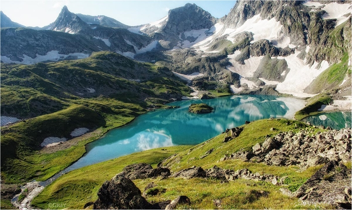

Имеретинские озера
Поход к красивейшим озерам в Кавказском заповеднике.

Имеретинские озера, расположенные на высоте 2500 метров, являются одним из самых красивых мест в Кавказском государственном природном биосферном заповеднике. Долина, где находятся озера, является местом обитания редких видов растений и животных. У самих озер можно встретить горных козлов
Большое Имеретинское озеро, иначе называемое озеро Безмолвия — самое крупное. Оно лежит в огромном горном цирке на высоте 2530 м над уровнем моря и занимает площадь 190 000 м2. Сложно представить эти масштабы, не видя озера, достаточно сказать, что обойти его кругом не торопясь, останавливаясь и фотографируя, занимает целый час.

Руководить походом будет Алексей Сорокин – один из самых активных участников проекта. Алексей в качестве волонтера весь прошлый год водил обучающие семейные и новичковые походы выходного дня по Подмосковным маркированным маршрутам, приобщив к туризму немалое количество молодежи и взрослых. Теперь он приглашает Вас с собой в длительный поход, чтобы поделиться своей любовью к большим горам.
Продолжительность: 6 дней
Километраж: 40 км
Сложность: Средняя
Отправление на маршрут: Краснодар в 9-00
Прибытие: Краснодар 18-00
Стоимость участия: 8500 руб
В стоимость тура входит:
- трехразовое питание на маршруте
- услуги гида-проводника
- медицинская аптечка
- костровое и газовое оборудование
- регистрация в МЧС
В стоимость тура не входит:
- перелет в/из Краснодар(а)
- прокат личного снаряжения
- переезды по маршруту
- медицинская страховка
- пропуск на территорию заповедника
Дополнительные расходы составят примерно 3000-5000 руб/чел, в зависимости от размера группы
Участникам предыдущих походов Rutrail скидка 10%.
Маркировщикам и активным волонтерам — особые условия!
Как добраться:
На поезде или самолете до Краснодара.
В первый день похода в Краснодаре нужно быть до 7 утра.
Программа похода:
1 день - Краснодар – кордон Закан.
Утром встречаемся на вокзале Краснодара, откуда совершаем переезд на микроавтобусе к кордону Закан, откуда начинается пешая часть маршрута. Неподалеку от кордона проведем первую ночевку. Место ночевки находится в лесу, поэтому первый вечер проведем с костром.
2 день - Река Имеретинка – Имеретинские водопады – озеро Безмолвия.
Утром, позавтракав и собрав лагерь, начинаем наш путь к Имеретинским озерам. Сегодня нас ждет непростой день. Начало нашего маршрута проходит по лесному массиву вдоль реки Имеретинка. Затем, выйдем из леса в зону альпийских лугов и продолжим движение вдоль каменистых склонов. На разрешенной стоянке, недалеко от Большого Имеретинского водопада мы сделаем перерыв на обед. После чего продолжим движение вверх и дойдем до озера Безмолвия или Большого Имеретинского. На берегу озера мы и благоустроим наш лагерь на три ближайшие ночи.
Пройденное расстояние: 10 км. Набор высоты: 1200 м. Высота ночевки: 2550 м.
3-4 день - Радиальные выходы к озерам Ривьера, Географов, Буша и Поднебесное.
В эти дни мы никуда не несем рюкзаки, а гуляем налегке. Из нашего лагеря мы поднимемся выше к другим озерам - Ривьера и Географов, а за ними увидим озеро Н.А. Буша. Оно лежит на 2800 м высоты и среди всех заповедных озер, пожалуй, выделяется и запоминается больше всех причудливой извилистостью береговой линии, поднимимся над озером повыше, чтобы увидеть его сверху. Маленькие бухты в нем сменяются крутыми скалистыми мысами, резко обрывающимися в воду, а с южного берега в длинный вытянутый залив сползает ледник, он же и питает озеро. В любую погоду озеро Буша имеет яркий синий цвет.
Пройденное расстояние: 4-9 км. Набор и сброс высоты: 300-700 м. Высота ночевки: 2550 м.
5 день - Возвращение к кордону Закан.
С утра завтракаем, собираем лагерь и начинаем спуск по уже знакомой нам дороге к кордону Закан, где заночуем в лесу.
Пройденное расстояние: 14 км. Сброс высоты: 1200 м. Высота ночевки: 1350 м.
6 день - Кордон Закан - Краснодар.
Утром, позавтракав и собрав снаряжение, дойдем до кордона Закан, откуда нас отвезет в Краснодар заказанный микроавтобус.
Что взять с собой:
•Рюкзак от 80л
•Спальник (температура комфорта от 0 до +5)
•Коврик
•Сидушка (пенопопа)
•Кружка, ложка, миска, нож
•Спички непромокаемые
•Зажигалка
•Брюки ходовые
•Футболки
•Термобелье
•Поларка
•Ветровка
•Баф
•Перчатки
•Треккинговая обувь
•Тапочки
•Нижнее белье, носки
•Полотенце, мыло, шампунь, зубная щетка, паста
•Солнцезащитный крем
•Солнцезащитные очки
•Деньги
•Кредитка
•Паспорт
•Телефон
•Фонарик
•Часы
•Фотоаппарат
•Пауэрбанк
•Провода
•Запасные батареи
Почти все ночевки в этом походе проходят на высоте около 2500 метров над уровнем моря. Днем на солнце может быть очень жарко, но по ночам температура на такой высоте даже летом опускается иногда до 0 градусов. В связи с этим обязательно проверьте температуру комфорта вашего спальника (не меньше 0 до +5).
Дополнительные сведения:
•Это полноценный пеший поход. Палатки, продовольствие и прочее снаряжение мы несем на себе в рюкзаках.
•В зависимости от погоды, состояния группы, в маршрут могут быть внесены изменения.
•Благоустройство лагеря (установка палаток, сбор дров, приготовлениe пищи) осуществляется всеми участниками похода.
- ПОХОД К ИМЕРЕТИНСКИМ ОЗЕРАМ
- Даты: 10 - 15 августа 2019.
- Руководитель: Алексей Сорокин.
- Стоимость: 8500 рублей.
Отправить заявку